Co-op Commander Guide: Vorazun
Matriarch of the Nerazim
Sections on this Page
Commander Summary
Vorazun uses the power of cloaked units to wreak havoc around the battlefield, combined with a powerful ability to stop time.

Level Unlocks
| Level/Icon | Name | Description |
|---|---|---|
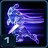 |
Shroud of Adun | Vorazun's Dark Templar have improved shields and cost less vespene gas. |
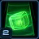 |
Spear of Adun: Orbital Assimilators |
The Spear of Adun harvests vespene gas from orbit without the need for Probes. Passive ability. |
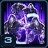 |
Shadow Legion | Increases the number of Vorazun's Shadow Guard from 2 to 4. This ability is located in the top panel. |
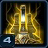 |
Twilight Council Upgrade Cache |
Upgrades Vorazun's Zealots to Centurions. New research available on the Twilight Council:
|
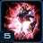 |
New Unit: Dark Archon |
Unlocks the ability to warp in Dark Archons from the Gateway. Powerful attack caster. Can use the Confuse and Mind Control abilities. Can attack ground and air units. |
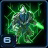 |
Dark Templar Upgrade Cache |
New research available on the Dark Shrine:
|
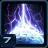 |
Veil of Shadows | Increases the shield regeneration rate of friendly cloaked units by 400%. |
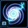 |
Spear of Adun: Event Horizon | Negates all armor of enemy units affected by the Black Hole ability. This ability is located in the top panel. |
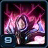 |
Dark Archon Upgrade Cache |
New research available on the Dark Shrine:
|
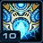 |
Spear of Adun: Time Stop | Unlocks the Time Stop ability which freezes all enemies in place for 20 seconds. This ability is located in the top panel. |
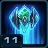 |
Dark Pylon: Recall | Unlocks the ability for Dark Pylons to Recall friendly units to their location. |
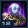 |
Fleet Beacon Upgrade Cache |
New research available on the Fleet Beacon:
|
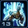 |
Spear of Adun: Emergency Recall |
Upon taking fatal damage, friendly cloaked or burrowed units are recalled to their owner's primary structure. This effect cannot occur more than once every 4 minutes. Passive ability. |
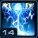 |
Spear of Adun: Chronomancy | Reduces the cooldown of Time Stop from 5 minutes to 4 minutes. This ability is located in the top panel. |
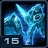 |
Strike from the Shadows | Increases the weapon damage of friendly cloaked or burrowed units by 15%. Increases the energy regeneration of friendly cloaked or burrowed units by 50%. |
Highlighted rows denote large power spikes for the commander.
Achievements
The commander-specific achievements for Vorazun are:
| Achievement | Name | Description |
|---|---|---|
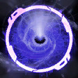 |
Event Horizon | Kill 15 units trapped in a single Black Hole on Hard difficulty. |
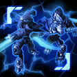 |
My Turn | Kill 5,000 enemy units with Vorazun's cloaked units in Co-op Missions. |
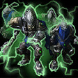 |
Shadow Guard | Kill 50 units with Vorazun's Shadow Guard in a single mission on Hard difficulty. |
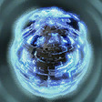 |
Your Turn | Your ally kills 1,000 units while Vorazun's Spear of Adun Time Stop is activated in Co-op Missions. |
Calldowns
The calldowns for Vorazun, at level 15, with no mastery points added are:
| Calldown | Name | Description | Recommended Usage | Numbers |
|---|---|---|---|---|
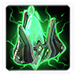 |
Deploy Dark Pylon | Warps in a Dark Pylon granting supply and power. Dark Pylons also cloak nearby friendly units and structures. Friendly cloaked units deal 15% more attack damage and 50% increased energy regeneration. |
|
|
| Black Hole | Creates a Black Hole that pulls in and stuns enemy units. Lasts 8 seconds. |
|
|
|
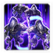 |
Deploy Shadow Guard | Deploys 4 elite Dark Templar at the target location that last for 60 seconds. |
|
|
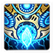 |
Time Stop | Alters space-time, freezing all enemies in place for 20 seconds. Unlimited range. |
|
|
The Deploy Dark Pylon ability brings a Dark Pylon onto the battlefield. This structure has abilities itself, shown below:
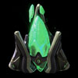
Dark Pylon
| Ability | Name | Description | Cooldown |
|---|---|---|---|
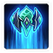 |
Recall | Teleports all friendly units in the target area to the location of the Dark Pylon. | 60 seconds |
The Deploy Shadow Guard ability brings Shadow Guards onto the battlefield. These units have abilities themselves, shown below:
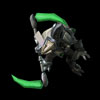
Shadow Guard
| Ability | Name | Description | Cooldown |
|---|---|---|---|
 |
Shadow Fury | Jump from target to target, dealing 20 (+15 vs. Light) damage with each jump. Hits 5 times. | 15 seconds |
 |
Blink | Teleport to a nearby target location. | 10 seconds |
 |
Void Stasis | Places target unit or structure in stasis for 10 seconds, disabling the unit for the duration of the effect. Units and structures in stasis cannot be attacked or affected by abilities. Can target structures or ground units. |
15 seconds |
Sub-Ascension Leveling
Difficulty: Moderate
As Vorazun's Corsairs can't cloak during early levels and Black Hole does not negate armor, build Dark Templars and Stalkers as your core army composition. Stalkers can deal with air units fairly well, especially when they have their Blink upgrades which can regenerate their shields rapidly. Due to the lack of Emergency Recall during early stages of leveling, use Black Holes liberally to ensure you do not lose Dark Templars.
While leveling through Mastery levels, allocate points into Power Set 3's Spear of Adun Energy mastery until you hit the desired number of points, before allocating them to Chrono Boost efficiency.
Masteries
Below are the three Power Sets for Vorazun with the recommended point allocations for each. Note that these are meant to serve a general, all-purpose build that is effective across all maps with no Prestiges selected. You are highly encourged to change these masteries to suit your playstyle and particular challenges you face (e.g. Weekly Mutations).
Power Set 1:
| Power | Value | Recommended Points to Add | Further Considerations |
|---|---|---|---|
| Dark Pylon Range | 2% per point 60% maximum |
0 | Dark Pylon range can be used if you intend on using Dark Pylons offensively with units that do not have cloak. For example, Void Rays can benefit from the general cloaking passives that Vorazun offers. By warping in a Dark pylon near your army, you'll be able to take advantage of those buffs, even if you use units that do not naturally have cloak. |
| Black Hole Duration | 2% per point 60% maximum |
30 |
Black Hole Duration is a better mastery as it gives your units more time to deal with enemies.
Power Set 2:
| Power | Value | Recommended Points to Add | Further Considerations |
|---|---|---|---|
| Shadow Guard Duration | 2 sec per point 60 sec maximum |
30 | Additional points into Shadow Guard Duration increases up time of the Shadowguard to allow for clearing of the expansion as well as dealing with early game attack waves. It provides Vorazun with an early-game pushing capability. However, they will be sacrificing Time Stop movement speed increases which will allow them to take out more high-priority targets. |
| Time Stop Unit Speed Increase | 1% per point 30% maximum |
0 |
Shadow Guard is generally a more versatile pick, as it provides Vorazun with a way of handling the early game. However, it does mean that Time Stop cannot be used as effectively to snipe targets.
Power Set 3:
| Power | Value | Recommended Points to Add | Further Considerations |
|---|---|---|---|
| Chrono Boost Efficiency | 1% per point 30% maximum |
0 | Points may be taken out of the Initial Spear of Adun energy mastery for the Chrono Boost mastery. However, this will sacrifice a player's early-game pushing potential. |
| Initial and Maximum Spear of Adun Energy | 3 per point 90 maximum |
30 |
A full 30 points into the initial energy will provide Vorazun players with the early-game pushing potential they require while they build up army and compounds very well with 30 points into the Shadow Guard duration mastery above. The Shadow Guard will need to be microed more carefully to take advantage of their full timer, but as a result, can solve Vorazun's Early game problems.
Prestiges
Below are the prestiges for Vorazun. Note that "Effective Level" is the level at which the prestige achieves it full effect.
| Level | Name | Description | Effective Level | Notes |
|---|---|---|---|---|
| 1 | Spirit of Respite |
|
13 | None |
| This prestige sacrifices Vorazun's mobility but allows her to quickly bring back recalled units onto the battlefield. The lack of mobility can be solved partially by being aware of mission timings. Another advantage of this prestige is it helps when playing against the Black Death mutator well by keeping infected units away from your mineral line. This prestige should be played while leveling Vorazun up to level 11, as it has no disadvantage. | ||||
| Level | Name | Description | Effective Level | Notes |
|---|---|---|---|---|
| 2 | Withering Siphon |
|
6 |
|
| The fact that this prestige does not kill severely limits its potential utility. Additionally, the reduction of the Stasis Ward duration further reduces the effectiveness of this Prestige, since Stasis Ward with Stasis Calibration is a very powerful tool in Vorazun's kit for dealing with attack waves and other difficult situations. | ||||
| Level | Name | Description | Effective Level | Notes |
|---|---|---|---|---|
| 3 | Keeper of Shadows |
|
10 |
|
| This prestige allows Time Stop to get more powerful as the player utilizes their Shadow Guard calldowns. However, the duration reduction of the Shadow Guards will mean that the player will need to clearly know how to utilize them effectively, even while using the Shadow Guard duration mastery. | ||||
Both Spirit of Respite and Keeper of Shadows are solid picks for general Vorazun-play, and will come down to the player's preferred playstyle. However, playing Vorazun without a Prestige Talent selected also works fine.
Recommended Army Composition
The recommended army composition for Vorazun is below. Note that this assumes no Prestige talent selected and recommended Mastery Allocations. This is a basic recommendation for your army framework. It is recommended to gain an understanding for each of the units in the Units section and further add tech units so that you are able to better handle the situations you face.
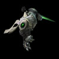
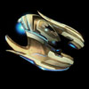
Dark Templar/Corsair builds can handle anything that is thrown at them. The ratio of Dark Templars to Corsairs will depend on the enemy composition you are facing.
Combat Units
For more information on Vorazun's unit stats, comparison between units and upgrade calculations, visit the Data Tables page.
Vorazun's combat units are listed below:
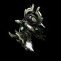
Centurion
- Their role as a melee ground unit is overshadowed by the effectiveness of Dark Templars.
- Generally not worth making, even as a mineral dump.
Skills:
| Skill | Name | Description | Cooldown | Energy Cost |
|---|---|---|---|---|
 |
Shadow Charge | Intercepts nearby enemies and increases the Centurion's movement speed. Ability can only be used once every 10 seconds. Briefly cloaks the Centurion and allows it to move through other units. |
10 seconds | 0 |
 |
Darkcoil | Stuns nearby enemy ground units for 2.5 seconds. Also temporarily grants the Centurion 100 additional shields for 2 seconds. Massive units are slowed. |
10 seconds | 0 |
Upgrades:
| Upgrade | Name | Effect |  / / |
Research Time |
|---|---|---|---|---|
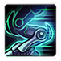 |
Shadow Charge | Allows Centurions to intercept nearby enemies. Also increases their movement speed by 0.25. | 100/100 | 60 seconds |
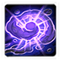 |
Darkcoil | Allows Centurions to stun nearby enemy ground units and increases their shields by 100 for a short duration. Massive units are slowed. |
150/150 | 90 seconds |
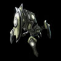
Stalker
- Useful alternative for anti-air.
- They are worth making on maps with low amounts of air.
- Helpful for dealing with early-game threats.
Skills:
| Skill | Name | Description | Cooldown | Energy Cost |
|---|---|---|---|---|
 |
Blink | Teleports the Stalker to a nearby target location. Ability can only be used once every 8 seconds. | 8 seconds | 0 |
Upgrades:
| Upgrade | Name | Effect | / |
Research Time |
|---|---|---|---|---|
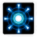 |
Blink | Allows Stalkers to teleport to a nearby target location. | 100/100 | 60 seconds |
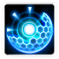 |
Phase Reactor | Blink now cloaks the Stalker and restores 80 shields over 5 seconds. | 150/150 | 90 seconds |
Dark Templar
- Should be the core of your army on most maps.
- Extremely powerful with the "Blink" and the "Shadow Fury" Upgrades.
Skills:
| Skill | Name | Description | Cooldown | Energy Cost |
|---|---|---|---|---|
 |
Shadow Fury | Jump from target to target, dealing 20 (+15 vs. Light) damage with each jump. Hits 5 times. | 15 seconds | 0 |
 |
Blink | Teleport to a nearby target location. | 10 seconds | 0 |
 |
Void Stasis | Places target unit or structure in stasis for 10 seconds, disabling the unit for the duration of the effect. Units and structures in stasis cannot be attacked or affected by abilities. Can target structures or ground units. |
15 seconds | 0 |
Upgrades:
| Upgrade | Name | Effect | / |
Research Time |
|---|---|---|---|---|
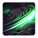 |
Shadow Fury | Allows Dark Templar to jump from target to target, dealing 20 (+15 vs. Light) damage with each jump. Hits 5 times. | 200/200 | 120 seconds |
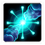 |
Blink | Enables Dark Templar to teleport to nearby locations. | 150/150 | 90 seconds |
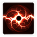 |
Void Stasis | Grants Dark Templar an ability to phase a target unit or structure out of existence for 10 seconds. This disables it entirely and prevents it from being attacked by units or abilities. Can target structures or ground units. |
200/200 | 120 seconds |
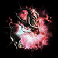
Dark Archon
- Extremely expensive unit.
- Draws a lot of aggro due to its powerful abilities.
- Looks good in theory, but in practice, not very effective due to high energy costs.
- Useful for dealing with Baneling attack waves by casting Confusion on the wave.
Skills:
| Skill | Name | Description | Cooldown | Energy Cost |
|---|---|---|---|---|
| Confusion | Forces enemy units in the target area to attack each other for 10 seconds. Heroic units are immune. |
8 seconds | 50 | |
 |
Mind Control | Permanently takes control of a target enemy unit. Heroic units are immune. |
30 seconds | 150 |
Upgrades:
| Upgrade | Name | Effect | / |
Research Time |
|---|---|---|---|---|
| Argus Crystal | Dark Archons start with full energy. | 100/100 | 60 seconds | |
| Mind Control | Allows a Dark Archon to take control of a targeted unit permanently. Heroic units are immune. |
150/150 | 90 seconds |
Corsair
- Anti-air unit.
- Extremely powerful when upgraded and used with Black Hole.
- "Disruption Web" is a must-have.
- Ensure you disable Disruption Web's auto-cast so that multiple Corsairs don't cast it on a single area.
Skills:
| Skill | Name | Description | Cooldown | Energy Cost |
|---|---|---|---|---|
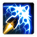 |
Disruption Web | Creates a web of energy on the ground that prevents enemy structures and ground units from attacking for 10 seconds. | 30 seconds | 0 |
Upgrades:
| Upgrade | Name | Effect | / |
Research Time |
|---|---|---|---|---|
 |
Disruption Web | Grants Corsairs the ability to create a web of energy on the ground that prevents enemy structures and ground units from attacking for 10 seconds. | 100/100 | 60 seconds |
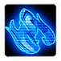 |
Stealth Drive | Permanently cloaks all Corsairs and Oracles. | 150/150 | 90 seconds |
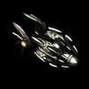
Void Ray
- Heavily affected by the armor rating of its target.
- Great on missions like Miner Evacuation due to their Hitscan attack, sustain potential and low infested anti-air capabilities.
Skills: None
Upgrades:
| Upgrade | Name | Effect | / |
Research Time |
|---|---|---|---|---|
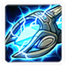 |
Prismatic Range | Increases the range (up to 3 increase) of the Void Ray's weapon as it continues to attack. | 150/150 | 90 seconds |
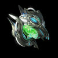
Oracle
- Key detection for Vorazun.
- Pulsar beam can be used aggressively to increase damage output of your entire army.
- Stasis Ward can be used to stall attack waves.
- Extremely fragile unit.
Skills:
| Skill | Name | Description | Cooldown | Energy Cost |
|---|---|---|---|---|
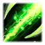 |
Pulsar Beam | Charges the Oracle's Pulsar Beam and allows it to attack enemy ground units. Drains 1.4 energy per second. |
4 seconds | 0 |
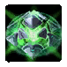 |
Stasis Ward | Places a cloaked Stasis Ward at the target location. Once activated by an enemy ground unit, the ward traps nearby enemies in stasis for 15 seconds. Trapped units cannot be attacked or affected by abilities. | 0 seconds | 50 |
Upgrades:
| Upgrade | Name | Effect | / |
Research Time |
|---|---|---|---|---|
| Stealth Drive | Permanently cloaks all Corsairs and Oracles. | 150/150 | 90 seconds | |
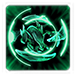 |
Stasis Calibration | Enemies affected by the Oracle's Stasis Ward can now be attacked. | 150/150 | 90 seconds |
Build Order
Below is the standard economic build order for Vorazun. For more information on how to read and construct your own build orders, please check the Build Order Theory page.
13 Dark Pylon
15 Assimilator
16 Assimilator
18 Gateway
19 Pylon
22 Change Rally to Expansion
23 Cybernetics Core
27 Shadowguard -> Gas -> Main
28 Twilight + Warp Gate
29 Assimilators + Nexus
Gameplay Guide
Playstyle Traps
A common trap for Vorazun players is to go for a mass Void Ray build. While Void Rays are powerful, they are slow and expensive to make, often putting the player behind for the rest of the game.
Dark Templars, combined with Corsairs are much more powerful and can be massed up much more quickly, due to the reduced gas costs of those units. Combined, they can handle most compositions effectively.
Time Stop Effects
Due to internal workings of map files and due to how Time Stop works in terms of mission triggers, Time Stop behaves slightly differently depending on the map with regards to the main objective and attack wave timings. The table below lists out how Time Stop behaves on every map. A "delayed" entry denotes a delay of 20s (the duration of Time Stop).
| Mission | Attack Waves | Main Objective | Other Notes |
|---|---|---|---|
| Chain of Ascension | Delayed | Hybrid waves delayed | Ji'Nara can be pushed |
| Cradle of Death | No delay | Mission timer delayed | - |
| Dead of Night | N/A | Mission timer delayed | - |
| Lock & Load | Delayed | Lock overload delayed | AI will start to aggressively push locks |
| Malwarfare | N/A | Terminal purification delayed | - |
| Miner Evacuation | Delayed | Ship launch delayed | Delays Panic Launch times |
| Mist Opportunities | No delay | No impact on Harvesters | - |
| Oblivion Express | No delay | Train spawns delayed | - |
| Part & Parcel | No delay | No mission timer delay | Parts cannot be picked up during Time Stop |
| Rifts to Korhal | No delay | Mission timer delayed | - |
| Scythe of Amon | No delay | No mission timer delay | - |
| Temple of the Past | No delay | No change to mission time | - |
| The Vermillion Problem | No delay | Mission timer delayed | - |
| Void Launch | Delayed | Shuttle spawns delayed | - |
| Void Thrashing | Delayed | Void Thrasher spawns delayed | - |
Playstyle Tips
- At the start of the game, use your initial Spear of Adun energy to place a Dark Pylon to give you supply and power.
- Your first Shadow Guard should be used to clear your expansion (and if possible, your ally's expansion).
- Most of your Spear of Adun energy should go into using Black Holes. Dark Pylons should only be placed at strategic locations.
- Use your Dark Pylons for mobility by using its Recall ability.
- Cloaked units that take fatal damage will respawn at your Nexus. Make sure you rally them accordingly.
- Stasis Wards can be used to chain-stasis enemies by placing a ward underneath already-stasis'ed enemies. Use this to handle high-HP targets and difficult Mutators.
- In the early game, focus on Air attack upgrades over ground attack upgrades, as Dark Templars will be dealing most of their damage through Shadow Fury, which does not get affected by Ground attack upgrades. Additionally, Corsairs need these upgrades in order to kill enemy units.